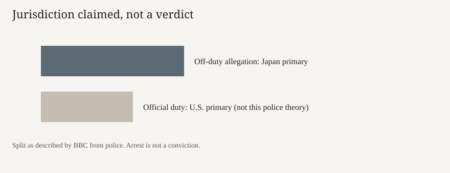

Naha · military · 5 October 2026
III MEF identified Lance Cpl. Devin Jacob Ballard after a Japanese murder arrest in Naha

What the desks agree
On Monday 5 October 2026, the III Marine Expeditionary Force confirmed to ABC News that Lance Cpl. Devin Jacob Ballard, 20, was the service member Japanese police arrested on Sunday on suspicion of murdering a Japanese woman in Naha, near U.S. bases on Okinawa. ABC reported that Ballard is assigned to III MEF and that the command would not release further personal or administrative details, citing the investigation and privacy rules. The BBC reported the same name, rank and age, and said police consider the alleged crime unrelated to official duties, which is why he is in Japanese custody. Both outlets identify the woman as Anna Yagi, 39. ABC says she was pronounced dead at the scene after being found at about 4:30 a.m. Saturday. The BBC says prefectural police put the discovery in the early hours of 3 October in a Naha hotel room.
ABC says Ballard was arrested on suspicion of murder and robbery, that Yagi’s backpack was found near the hotel with the wallet still inside, and that surveillance indicated the suspect left on foot. The BBC says local media, citing police, reported that Yagi appeared to have been strangled with a cord, and that security footage allegedly shows a man believed to be the suspect entering with her and leaving alone with her belongings. Japanese Prime Minister Sanae Takaichi lodged a formal protest with the United States, according to the BBC and a Wall Street Journal item summarised by Just Security. The protest is a diplomatic act. It is not a charge.
What is only a quote
The method of death is attributed to local media citing police. It is not, in the pieces scored here, a published autopsy table. “Brutal and heinous,” a phrase in an ABC headline variant, is evaluative language, not a statutory element that has been proved. Residents quoted by the BBC, including a woman identified as Sato, say decades of government protests are not enough. Those sentences describe grief and political memory. They do not identify a perpetrator. No court has entered a finding. An arrest on suspicion, under Japanese procedure, starts an investigation; it is not a conviction.
III MEF’s refusal to give more biographical detail is a command statement about process. It does not confirm or deny the hotel timeline. Investigators, ABC says, are still examining Ballard’s movements and any relationship with Yagi. That examination is unfinished in the public copy.
The mechanism a reader needs
Okinawa hosts the densest concentration of U.S. bases in Japan, a legacy of the 1945 battle, the occupation, and the 1960 security treaty as revised. Criminal jurisdiction is split by the status-of-forces arrangements. If a service member is on official duty, the United States usually has the primary right. If the allegation is off duty, Japan has primary jurisdiction. The BBC’s point that police say this case is unrelated to duty is the reason given for Japanese custody. A protest from Tokyo asks Washington to cooperate and to answer politically. It does not transfer the file to a U.S. court-martial unless the governments agree to a waiver.
Previous crimes by U.S. personnel on Okinawa, including the 1995 abduction and rape of a schoolgirl, produced large protests and base-politics that still structure prefectural elections. The BBC headline “Not again” points at that history. The history explains why a single arrest is a diplomatic story. It does not prove this allegation. Kadena, in the photograph, is an Air Force base. III MEF is a Marine command. The aerial frame is a type picture of the U.S. footprint on the island, not a picture of the unit or the room.
What this story is not
It is not a conviction. It is not a released charging document in English with a docket number. It is not a confirmed autopsy. It is not a photograph of the accused or of the hotel. The base image is an old aerial, deliberately dull. It is not a claim that every service member on Okinawa is implicated.
